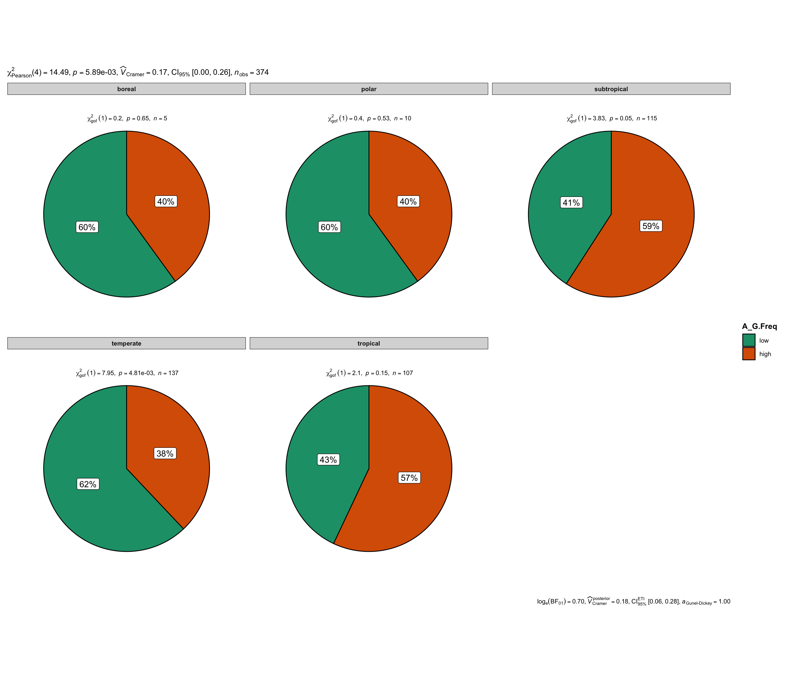
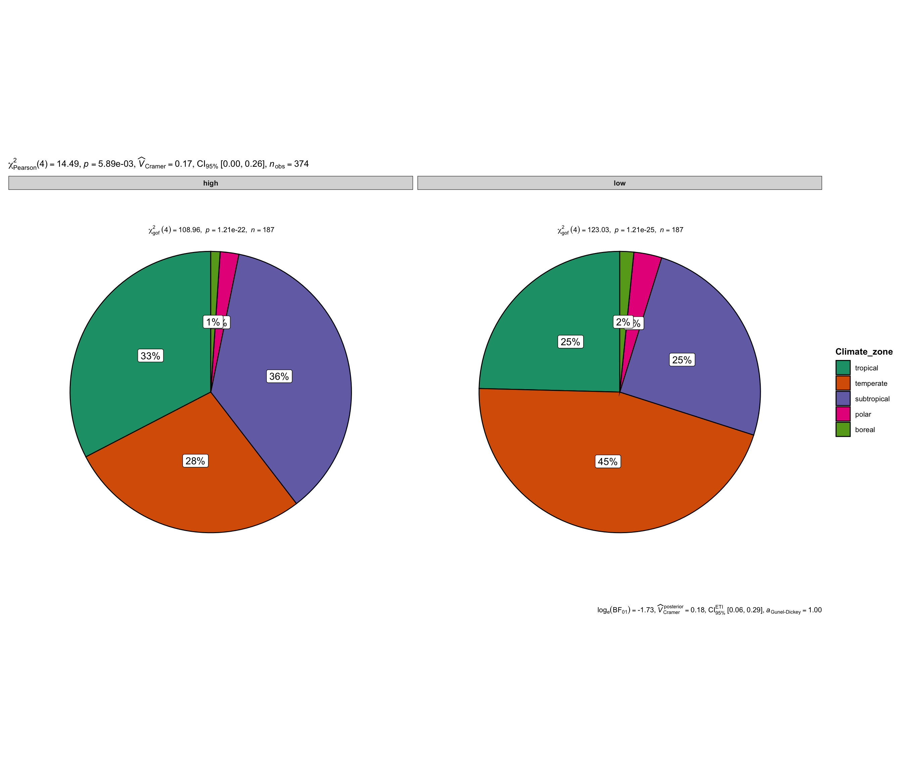
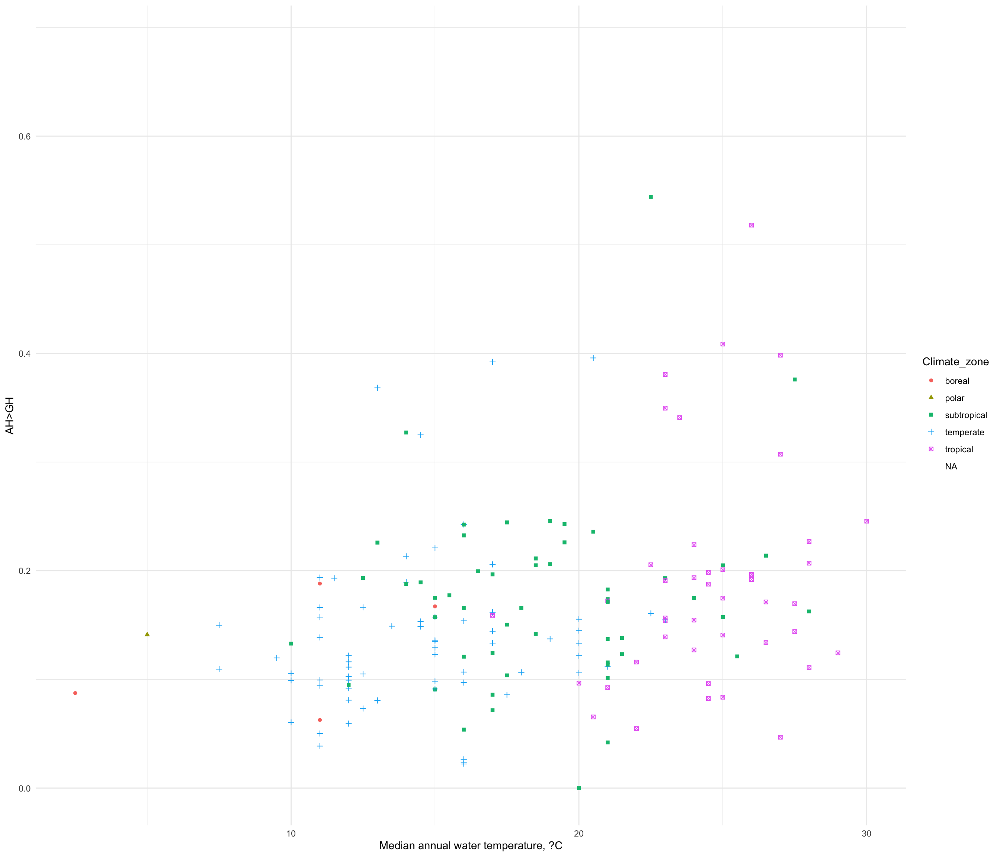

Analysis of the polymorphic data in Fishes obtained by NeMu pipeline
Alina G. Mikhailova
2025-05-23
Last updated: 2025-05-23
Checks: 7 0
Knit directory:
TemperatureEffectsOnMtDNAspectra/
This reproducible R Markdown analysis was created with workflowr (version 1.7.1). The Checks tab describes the reproducibility checks that were applied when the results were created. The Past versions tab lists the development history.
Great! Since the R Markdown file has been committed to the Git repository, you know the exact version of the code that produced these results.
Great job! The global environment was empty. Objects defined in the global environment can affect the analysis in your R Markdown file in unknown ways. For reproduciblity it’s best to always run the code in an empty environment.
The command set.seed(20240719) was run prior to running
the code in the R Markdown file. Setting a seed ensures that any results
that rely on randomness, e.g. subsampling or permutations, are
reproducible.
Great job! Recording the operating system, R version, and package versions is critical for reproducibility.
Nice! There were no cached chunks for this analysis, so you can be confident that you successfully produced the results during this run.
Great job! Using relative paths to the files within your workflowr project makes it easier to run your code on other machines.
Great! You are using Git for version control. Tracking code development and connecting the code version to the results is critical for reproducibility.
The results in this page were generated with repository version 8f5f58c. See the Past versions tab to see a history of the changes made to the R Markdown and HTML files.
Note that you need to be careful to ensure that all relevant files for
the analysis have been committed to Git prior to generating the results
(you can use wflow_publish or
wflow_git_commit). workflowr only checks the R Markdown
file, but you know if there are other scripts or data files that it
depends on. Below is the status of the Git repository when the results
were generated:
Ignored files:
Ignored: .DS_Store
Ignored: .Rhistory
Ignored: .Rproj.user/
Ignored: analysis/.DS_Store
Ignored: analysis/.Rhistory
Ignored: code/.DS_Store
Ignored: data/.DS_Store
Ignored: output/.DS_Store
Note that any generated files, e.g. HTML, png, CSS, etc., are not included in this status report because it is ok for generated content to have uncommitted changes.
These are the previous versions of the repository in which changes were
made to the R Markdown
(analysis/I_Polymorphic_Data_Analysis.Rmd) and HTML
(docs/I_Polymorphic_Data_Analysis.html) files. If you’ve
configured a remote Git repository (see ?wflow_git_remote),
click on the hyperlinks in the table below to view the files as they
were in that past version.
| File | Version | Author | Date | Message |
|---|---|---|---|---|
| html | 8f5f58c | Alya Mikhailova | 2025-05-23 | Build site. |
| Rmd | 27e35c4 | Alya Mikhailova | 2025-05-23 | Presentation at lab meeting Chapter 1 |
| html | 27e35c4 | Alya Mikhailova | 2025-05-23 | Presentation at lab meeting Chapter 1 |
Reading mutation spectra database (L-strand) and ecological databases
#mutSpec12all <- read_csv(here(data_dir, "MutSpecVertebrates12all.csv.gz"))
mutSpec12 <- read_csv(here(data_dir, "MutSpecVertebrates12fish.csv"))
cat("N species =", length(unique(mutSpec12$Species)))N species = 1035head(mutSpec12)# A tibble: 6 × 9
Gene Class Species Mut Observed TreeLeaves MSAsize Expected MutSpec
<chr> <chr> <chr> <chr> <dbl> <dbl> <dbl> <dbl> <dbl>
1 Cytb Actinopteri Scombrop… A>C 4 68 1140 71.0 0.0326
2 Cytb Actinopteri Scombrop… A>G 21.6 68 1140 111. 0.113
3 Cytb Actinopteri Scombrop… A>T 2 68 1140 71.0 0.0163
4 Cytb Actinopteri Scombrop… C>A 3 68 1140 86.3 0.0201
5 Cytb Actinopteri Scombrop… C>G 0 68 1140 86.3 0
6 Cytb Actinopteri Scombrop… C>T 10.7 68 1140 182. 0.0340MutSpecForAnalysis <- mutSpec12 %>% dplyr::select(Class, Species, Mut, MutSpec)
MutSpecForAnalysis$Mut <- gsub(">", "_", MutSpecForAnalysis$Mut)
MutSpecForAnalysis <- MutSpecForAnalysis %>% pivot_wider(names_from = Mut, values_from = MutSpec, , values_fn = median)
colnames(MutSpecForAnalysis) <- c("Class",
"Species",
"T_G.H",
"T_C.H",
"T_A.H",
"G_T.H",
"G_C.H",
"G_A.H",
"C_T.H",
"C_G.H",
"C_A.H",
"A_T.H",
"A_G.H",
"A_C.H")fishEcology <- read.csv(here(tables_dir, "Full_fish_ecology_table_2025.csv"))
head(fishEcology) Species Wmax Lmax tmax
1 Abbottina_rivularis NA 9.10000 2.00000
2 Abramis_brama 4112.167 46.91111 14.41667
3 Abudefduf_vaigiensis NA 18.96667 NA
4 Acanthemblemaria_aspera NA 3.00000 4.00000
5 Acanthocybium_solandri 7200.000 177.88000 9.30000
6 Acanthopagrus_berda 660.000 56.00000 12.50000
FeedingType FoodTroph tm Lm Temp_min Temp_max
1 <NA> NA 1.000 4.50000 NA NA
2 hunting macrofauna (predator) 3.15 4.125 28.75000 10 24
3 grazing on aquatic plants 3.39 NA 12.00000 NA NA
4 hunting macrofauna (predator) 3.12 NA NA NA NA
5 hunting macrofauna (predator) 4.45 2.000 99.33333 NA NA
6 hunting macrofauna (predator) 3.50 NA 21.00000 NA NA
Climate_zone Temp_avg
1 subtropical NA
2 temperate 17
3 tropical NA
4 <NA> NA
5 subtropical NA
6 tropical NACalculating of average MutSpec for Fisches
AverageMutSpec <- mutSpec12 %>% group_by(Mut) %>% summarise(meanmutspec = mean(MutSpec, na.rm = TRUE))
AverageMutSpec$Mut.H <- c("T_G.H",
"T_C.H",
"T_A.H",
"G_T.H",
"G_C.H",
"G_A.H",
"C_T.H",
"C_G.H",
"C_A.H",
"A_T.H",
"A_G.H",
"A_C.H")
f1a = ggplot(AverageMutSpec,
aes(
x = AverageMutSpec$Mut.H,
y = AverageMutSpec$meanmutspec,
fill = AverageMutSpec$Mut.H
)
) +
geom_bar(stat = "identity") +
scale_fill_manual(
values = c(
"#bdbdbd",
"#00a426",
"#bdbdbd",
"#bdbdbd",
"#bdbdbd",
"#ff0000",
"#900000",
"#bdbdbd",
"#bdbdbd",
"#bdbdbd",
"#005213",
"#bdbdbd"
)
) +
labs(title = "Average mitochondrial mutational spectrum in Fishes", x = "Substitution types", y = "Normalised Frequencies") + theme(
legend.position = "none",
# Remove legend
panel.background = element_blank(),
axis.line = element_line(color = "black")# Remove background
)
ggsave(here(plots_dir,"PolymorphicData.Actinopterygii.AverageMutSpec.pdf"),
plot = f1a,
width = 6,
height = 6
)
f1a
| Version | Author | Date |
|---|---|---|
| 27e35c4 | Alya Mikhailova | 2025-05-23 |
Comparison of average MutSpec between cold and warm fisches
merging <- list(MutSpecForAnalysis, fishEcology)
MutAndEco <- merging %>% reduce(left_join, by= "Species")
temperaturestat <- summary (MutAndEco$Temp_avg)
WarmFishes <- filter(MutAndEco, Temp_avg > as.numeric(temperaturestat["3rd Qu."]))
WarmFishes <- pivot_longer(WarmFishes, cols = c("T_G.H",
"T_C.H",
"T_A.H",
"G_T.H",
"G_C.H",
"G_A.H",
"C_T.H",
"C_G.H",
"C_A.H",
"A_T.H",
"A_G.H",
"A_C.H"), names_to = "Mut", values_to = "MutSpec" )
AverageMutSpecWarm <- WarmFishes %>% group_by(Mut) %>% summarise(meanmutspec = mean(MutSpec, na.rm = TRUE))
Nwarm <- length(unique(WarmFishes$Species))
ColdFishes <- filter(MutAndEco, Temp_avg < as.numeric(temperaturestat["1st Qu."]))
ColdFishes <- pivot_longer(ColdFishes, cols = c("T_G.H",
"T_C.H",
"T_A.H",
"G_T.H",
"G_C.H",
"G_A.H",
"C_T.H",
"C_G.H",
"C_A.H",
"A_T.H",
"A_G.H",
"A_C.H"), names_to = "Mut", values_to = "MutSpec" )
AverageMutSpecCold <- ColdFishes %>% group_by(Mut) %>% summarise(meanmutspec = mean(MutSpec, na.rm = TRUE))
Ncold <- length(unique(ColdFishes$Species))
f1bbw = ggplot(AverageMutSpecWarm,
aes(
x = AverageMutSpecWarm$Mut,
y = AverageMutSpecWarm$meanmutspec,
fill = AverageMutSpecWarm$Mut
)
) +
geom_bar(stat = "identity") +
scale_fill_manual(
values = c(
"#bdbdbd",
"#00a426",
"#bdbdbd",
"#bdbdbd",
"#bdbdbd",
"#ff0000",
"#900000",
"#bdbdbd",
"#bdbdbd",
"#bdbdbd",
"#005213",
"#bdbdbd"
)
) +
labs(title = "Average mitochondrial mutational spectrum in Warm Fishes, <23C", x = "Substitution types", y = "Normalised Frequencies") + theme(
legend.position = "none",
# Remove legend
panel.background = element_blank(),
axis.line = element_line(color = "black")# Remove background
) +
geom_text(x=2, y=0.3, label=paste("N warm =", Nwarm), size = 7)
f1bbc = ggplot(AverageMutSpecCold,
aes(
x = AverageMutSpecCold$Mut,
y = AverageMutSpecCold$meanmutspec,
fill = AverageMutSpecCold$Mut
)
) +
geom_bar(stat = "identity") +
scale_fill_manual(
values = c(
"#bdbdbd",
"#00a426",
"#bdbdbd",
"#bdbdbd",
"#bdbdbd",
"#ff0000",
"#900000",
"#bdbdbd",
"#bdbdbd",
"#bdbdbd",
"#005213",
"#bdbdbd"
)
) +
labs(title = "Average mitochondrial mutational spectrum in Cold Fishes, > 13C ", x = "Substitution types", y = "Normalised Frequencies") + theme(
legend.position = "none",
# Remove legend
panel.background = element_blank(),
axis.line = element_line(color = "black")# Remove background
)+
geom_text(x=2, y=0.3, label=paste("N cold =", Ncold), size = 7)
both <- ggarrange(f1bbc, f1bbw, ncol = 2)
ggsave(here(plots_dir,"PolymorphicData.Actinopterygii.AverageMutSpecColdAndWarm.pdf"),
plot = both,
width = 12,
height = 6
)
both
| Version | Author | Date |
|---|---|---|
| 27e35c4 | Alya Mikhailova | 2025-05-23 |
Studies of A>G spectra with temperature and other parameters in fishes
A>G freqs dependence on climate zones
ClimateZonetest <- na.omit(data.frame(subset(MutAndEco, select = c(A_G.H, Climate_zone))))
ClimateZonetest$Climate_zone <- as.factor(ClimateZonetest$Climate_zone)
AGmedian <- median(ClimateZonetest$A_G.H)
ClimateZonetest$A_G.Freq <- "low"
ClimateZonetest[ClimateZonetest$A_G.H >= AGmedian,]$A_G.Freq <- "high"
ClimateZonetest$A_G.Freq <- as.factor(ClimateZonetest$A_G.Freq)
ClimateZonetest <- ClimateZonetest[,2-3]
ggpiestats(data = ClimateZonetest, x = A_G.Freq, y = Climate_zone)
| Version | Author | Date |
|---|---|---|
| 27e35c4 | Alya Mikhailova | 2025-05-23 |
ggpiestats(data = ClimateZonetest, x = Climate_zone, y = A_G.Freq)
| Version | Author | Date |
|---|---|---|
| 27e35c4 | Alya Mikhailova | 2025-05-23 |
chisq.test(ClimateZonetest$A_G.Freq, ClimateZonetest$Climate_zone)
Pearson's Chi-squared test
data: ClimateZonetest$A_G.Freq and ClimateZonetest$Climate_zone
X-squared = 14.486, df = 4, p-value = 0.005894ClimateZonetest <- na.omit(data.frame(subset(MutAndEco, select = c(A_G.H, Climate_zone))))
cold <- c("boreal", "polar", "temperate")
warm <- c("subtropical", "tropical")
wilcox.test(ClimateZonetest[ClimateZonetest$Climate_zone %in% cold,]$A_G.H,
ClimateZonetest[ClimateZonetest$Climate_zone %in% warm,]$A_G.H)
Wilcoxon rank sum test with continuity correction
data: ClimateZonetest[ClimateZonetest$Climate_zone %in% cold, ]$A_G.H and ClimateZonetest[ClimateZonetest$Climate_zone %in% warm, ]$A_G.H
W = 12778, p-value = 6.697e-05
alternative hypothesis: true location shift is not equal to 0f1bb <- ggplot(MutAndEco, aes(x=Temp_avg, y=A_G.H, shape = Climate_zone, colour = Climate_zone)) +
geom_point() +
labs(x = "Median annual water temperature, ?C", y = "AH>GH") + # Axis labels
theme_minimal() # Theme customization
f1bb
| Version | Author | Date |
|---|---|---|
| 27e35c4 | Alya Mikhailova | 2025-05-23 |
A>G freqs dependence on temperature
tidy(cor.test(MutAndEco$A_G.H, MutAndEco$Temp_avg, method = 'spearman'))# A tibble: 1 × 5
estimate statistic p.value method alternative
<dbl> <dbl> <dbl> <chr> <chr>
1 0.307 547372. 0.0000507 Spearman's rank correlation rho two.sided tidy(cor.test(MutAndEco$A_T.H, MutAndEco$Temp_avg, method = 'spearman'))# A tibble: 1 × 5
estimate statistic p.value method alternative
<dbl> <dbl> <dbl> <chr> <chr>
1 -0.109 876384. 0.160 Spearman's rank correlation rho two.sided tidy(cor.test(MutAndEco$A_C.H, MutAndEco$Temp_avg, method = 'spearman'))# A tibble: 1 × 5
estimate statistic p.value method alternative
<dbl> <dbl> <dbl> <chr> <chr>
1 -0.00446 793767. 0.954 Spearman's rank correlation rho two.sided tidy(cor.test(MutAndEco$T_A.H, MutAndEco$Temp_avg, method = 'spearman'))# A tibble: 1 × 5
estimate statistic p.value method alternative
<dbl> <dbl> <dbl> <chr> <chr>
1 0.0898 719291. 0.247 Spearman's rank correlation rho two.sided tidy(cor.test(MutAndEco$T_G.H, MutAndEco$Temp_avg, method = 'spearman'))# A tibble: 1 × 5
estimate statistic p.value method alternative
<dbl> <dbl> <dbl> <chr> <chr>
1 0.0456 754191. 0.557 Spearman's rank correlation rho two.sided tidy(cor.test(MutAndEco$T_C.H, MutAndEco$Temp_avg, method = 'spearman'))# A tibble: 1 × 5
estimate statistic p.value method alternative
<dbl> <dbl> <dbl> <chr> <chr>
1 -0.214 959054. 0.00543 Spearman's rank correlation rho two.sided tidy(cor.test(MutAndEco$C_A.H, MutAndEco$Temp_avg, method = 'spearman'))# A tibble: 1 × 5
estimate statistic p.value method alternative
<dbl> <dbl> <dbl> <chr> <chr>
1 -0.207 953787. 0.00711 Spearman's rank correlation rho two.sided tidy(cor.test(MutAndEco$C_T.H, MutAndEco$Temp_avg, method = 'spearman'))# A tibble: 1 × 5
estimate statistic p.value method alternative
<dbl> <dbl> <dbl> <chr> <chr>
1 -0.0342 817299. 0.660 Spearman's rank correlation rho two.sided tidy(cor.test(MutAndEco$C_G.H, MutAndEco$Temp_avg, method = 'spearman'))# A tibble: 1 × 5
estimate statistic p.value method alternative
<dbl> <dbl> <dbl> <chr> <chr>
1 -0.0983 867946. 0.205 Spearman's rank correlation rho two.sided tidy(cor.test(MutAndEco$G_T.H, MutAndEco$Temp_avg, method = 'spearman'))# A tibble: 1 × 5
estimate statistic p.value method alternative
<dbl> <dbl> <dbl> <chr> <chr>
1 -0.0209 806749. 0.788 Spearman's rank correlation rho two.sided tidy(cor.test(MutAndEco$G_A.H, MutAndEco$Temp_avg, method = 'spearman'))# A tibble: 1 × 5
estimate statistic p.value method alternative
<dbl> <dbl> <dbl> <chr> <chr>
1 0.0693 735489. 0.372 Spearman's rank correlation rho two.sided tidy(cor.test(MutAndEco$G_C.H, MutAndEco$Temp_avg, method = 'spearman'))# A tibble: 1 × 5
estimate statistic p.value method alternative
<dbl> <dbl> <dbl> <chr> <chr>
1 0.00695 784753. 0.929 Spearman's rank correlation rho two.sided SubsetClass<- unique(MutAndEco$Class)
spN <- nrow(MutAndEco[!is.na(MutAndEco$Temp_avg),])
cat("N species =", spN, "Taxa =", SubsetClass)N species = 168 Taxa = Actinopteri Chondrichthyesf1b <- ggplot(MutAndEco, aes(x=Temp_avg, y=A_G.H)) +
geom_point(color="#73514f") + # Scatter plot
geom_smooth(method = "lm", color = "black", # Regression line + CI
fill = "lightgray", se = TRUE) + # Set se=TRUE for confidence interval
stat_cor(method = "spearman", # Spearman correlation stats
aes(label = paste(..r.label.., ..p.label.., "N", spN, sep = "~"))) + # Include n
labs(x = "Median annual water temperature, ?C", y = "AH>GH") + # Axis labels
theme_minimal() # Theme customization
ggsave(here(plots_dir,"PolymorphicData.Actinopterygii.A_GwitnTemperature.pdf"),
plot = f1b,
width = 6,
height = 6
)
f1b
| Version | Author | Date |
|---|---|---|
| 27e35c4 | Alya Mikhailova | 2025-05-23 |
taxonomy <- rfishbase::species_names()
taxonomy$Species <- gsub(" ", "_", taxonomy$Species)
MutAndEco <- merge(MutAndEco, taxonomy, by="Species", all.x = TRUE)
temp <- MutAndEco[!is.na(MutAndEco$Temp_avg),]
table(temp$Order)
Acanthuriformes Acipenseriformes
4 2
Anabantiformes Anguilliformes
6 3
Atheriniformes Beloniformes
1 1
Carangiformes Carcharhiniformes
4 1
Centrarchiformes Characiformes
10 1
Cichliformes Clupeiformes
4 2
Cypriniformes Cyprinodontiformes
44 10
Esociformes Eupercaria/misc
1 4
Gadiformes Galaxiiformes
4 4
Gobiiformes Gonorynchiformes
9 1
Mugiliformes Osmeriformes
1 2
Osteoglossiformes Ovalentaria/misc
2 3
Perciformes/Cottoidei Perciformes/Gasterosteoidei
2 2
Perciformes/Percoidei Pleuronectiformes
7 2
Salmoniformes Scombriformes
11 10
Siluriformes Squaliformes
7 1
Synbranchiformes
2 my <- c("Acanthuriformes", "Anabantiformes", "Centrarchiformes", "Cypriniformes", "Cyprinodontiformes", "Gobiiformes",
"Perciformes/Percoidei", "Salmoniformes", "Scombriformes", "Siluriformes")
temp <- temp[temp$Order %in% my,]
table(temp$Order)
Acanthuriformes Anabantiformes Centrarchiformes
4 6 10
Cypriniformes Cyprinodontiformes Gobiiformes
44 10 9
Perciformes/Percoidei Salmoniformes Scombriformes
7 11 10
Siluriformes
7 temp$Group <- "Cold"
for (i in my) {
imean = mean(temp[temp$Order == i,]$Temp_avg, na.rm=TRUE)
temp[temp$Order == i & temp[temp$Order == i,]$Temp_avg >= imean,]$Group = "Warm"
boxplot(temp[temp$Order == i,]$A_G.H ~ temp[temp$Order == i,]$Group, main=i)
}


LM
MutAndEco$DeltaT <- MutAndEco$Temp_max - MutAndEco$Temp_min
summary(lm(A_G.H ~ Temp_avg + DeltaT + Wmax + tmax + tm + FoodTroph, data = MutAndEco))
Call:
lm(formula = A_G.H ~ Temp_avg + DeltaT + Wmax + tmax + tm + FoodTroph,
data = MutAndEco)
Residuals:
Min 1Q Median 3Q Max
-0.08484 -0.03873 -0.00368 0.03794 0.15781
Coefficients:
Estimate Std. Error t value Pr(>|t|)
(Intercept) 3.181e-02 6.417e-02 0.496 0.6226
Temp_avg 3.491e-03 1.737e-03 2.010 0.0507 .
DeltaT 2.491e-03 1.022e-03 2.437 0.0190 *
Wmax -1.193e-07 9.940e-08 -1.200 0.2368
tmax 1.601e-03 1.207e-03 1.326 0.1917
tm -4.794e-03 4.517e-03 -1.061 0.2945
FoodTroph 3.858e-03 1.433e-02 0.269 0.7890
---
Signif. codes: 0 '***' 0.001 '**' 0.01 '*' 0.05 '.' 0.1 ' ' 1
Residual standard error: 0.05295 on 43 degrees of freedom
(985 observations deleted due to missingness)
Multiple R-squared: 0.3125, Adjusted R-squared: 0.2166
F-statistic: 3.257 on 6 and 43 DF, p-value: 0.009945summary(lm(A_G.H ~ Temp_avg + FoodTroph + Wmax, data = MutAndEco))
Call:
lm(formula = A_G.H ~ Temp_avg + FoodTroph + Wmax, data = MutAndEco)
Residuals:
Min 1Q Median 3Q Max
-0.12071 -0.05054 -0.01052 0.03527 0.36052
Coefficients:
Estimate Std. Error t value Pr(>|t|)
(Intercept) -4.262e-03 5.784e-02 -0.074 0.941431
Temp_avg 5.260e-03 1.473e-03 3.572 0.000586 ***
FoodTroph 2.327e-02 1.421e-02 1.637 0.105369
Wmax -1.089e-07 9.933e-08 -1.096 0.276152
---
Signif. codes: 0 '***' 0.001 '**' 0.01 '*' 0.05 '.' 0.1 ' ' 1
Residual standard error: 0.07724 on 85 degrees of freedom
(946 observations deleted due to missingness)
Multiple R-squared: 0.1491, Adjusted R-squared: 0.119
F-statistic: 4.963 on 3 and 85 DF, p-value: 0.003193summary(lm(A_G.H ~ Temp_avg + tmax + tm, data = MutAndEco))
Call:
lm(formula = A_G.H ~ Temp_avg + tmax + tm, data = MutAndEco)
Residuals:
Min 1Q Median 3Q Max
-0.12072 -0.03623 -0.01052 0.02871 0.23846
Coefficients:
Estimate Std. Error t value Pr(>|t|)
(Intercept) 0.086953 0.032417 2.682 0.00911 **
Temp_avg 0.003799 0.001633 2.327 0.02285 *
tmax 0.002353 0.001273 1.849 0.06869 .
tm -0.007172 0.004787 -1.498 0.13853
---
Signif. codes: 0 '***' 0.001 '**' 0.01 '*' 0.05 '.' 0.1 ' ' 1
Residual standard error: 0.06375 on 70 degrees of freedom
(961 observations deleted due to missingness)
Multiple R-squared: 0.1517, Adjusted R-squared: 0.1153
F-statistic: 4.172 on 3 and 70 DF, p-value: 0.008905summary(lm(A_G.H ~ Temp_avg + DeltaT, data = MutAndEco))
Call:
lm(formula = A_G.H ~ Temp_avg + DeltaT, data = MutAndEco)
Residuals:
Min 1Q Median 3Q Max
-0.16695 -0.05126 -0.01174 0.02660 0.35772
Coefficients:
Estimate Std. Error t value Pr(>|t|)
(Intercept) 0.0492206 0.0305765 1.610 0.109
Temp_avg 0.0052658 0.0012676 4.154 5.33e-05 ***
DeltaT 0.0012415 0.0009151 1.357 0.177
---
Signif. codes: 0 '***' 0.001 '**' 0.01 '*' 0.05 '.' 0.1 ' ' 1
Residual standard error: 0.08488 on 158 degrees of freedom
(874 observations deleted due to missingness)
Multiple R-squared: 0.09847, Adjusted R-squared: 0.08705
F-statistic: 8.628 on 2 and 158 DF, p-value: 0.0002777PGLS
tree = read.tree(file = here(data_dir, "chordates_species.nwk"))
tree <- ape::drop.tip(tree, "Tenebrosternarchus_preto")
MutAndEco <- MutAndEco %>% dplyr::select(Species, A_G.H, C_T.H, G_A.H, T_C.H, Temp_avg)
MutAndEco[duplicated(MutAndEco$Species),][1] Species A_G.H C_T.H G_A.H T_C.H Temp_avg
<0 rows> (or 0-length row.names)row.names(MutAndEco) = MutAndEco$Species
tree_pruned = treedata(tree, MutAndEco, sort=T, warnings=T)$phy
data<-as.data.frame(treedata(tree_pruned, MutAndEco, sort=T, warnings=T)$data)
data$Species = as.character(data$Species)
data$A_G.H = as.numeric(data$A_G.H)
data$C_T.H = as.numeric(data$C_T.H)
data$G_A.H = as.numeric(data$G_A.H)
data$T_C.H = as.numeric(data$T_C.H)
data$Temp_avg = as.numeric(data$Temp_avg)
data_comp <- comparative.data(tree_pruned, data, Species, vcv=TRUE)
#la.A_G <- phylosig(tree_pruned, data$A_G.H, method = "lambda", test = TRUE)
#la.temp <- phylosig(tree_pruned, data$Temp_avg, method = "lambda", test = TRUE)
summary(pgls(A_G.H ~ Temp_avg, data_comp, lambda="ML"))
Call:
pgls(formula = A_G.H ~ Temp_avg, data = data_comp, lambda = "ML")
Residuals:
Min 1Q Median 3Q Max
-0.0080311 -0.0023654 -0.0005517 0.0015528 0.0167251
Branch length transformations:
kappa [Fix] : 1.000
lambda [ ML] : 0.000
lower bound : 0.000, p = 1
upper bound : 1.000, p = < 2.22e-16
95.0% CI : (NA, 0.175)
delta [Fix] : 1.000
Coefficients:
Estimate Std. Error t value Pr(>|t|)
(Intercept) 0.0790861 0.0225661 3.5046 0.0005951 ***
Temp_avg 0.0046805 0.0011718 3.9942 9.924e-05 ***
---
Signif. codes: 0 '***' 0.001 '**' 0.01 '*' 0.05 '.' 0.1 ' ' 1
Residual standard error: 0.00386 on 158 degrees of freedom
Multiple R-squared: 0.09171, Adjusted R-squared: 0.08596
F-statistic: 15.95 on 1 and 158 DF, p-value: 9.924e-05 #la.C_T <- phylosig(tree_pruned, data$C_T.H, method = "lambda", test = TRUE)
#la.G_A <- phylosig(tree_pruned, data$G_A.H, method = "lambda", test = TRUE)
#la.T_C <- phylosig(tree_pruned, data$T_C.H, method = "lambda", test = TRUE)
#data$Tv <- 1-(data$A_G.H + data$G_A.H + data$T_C.H + data$C_T.H)
#la.Tv <- phylosig(tree_pruned, data$Tv, method = "lambda", test = TRUE)Expanding temperature data
sessionInfo()R version 4.4.2 (2024-10-31)
Platform: aarch64-apple-darwin20
Running under: macOS Sequoia 15.4.1
Matrix products: default
BLAS: /Library/Frameworks/R.framework/Versions/4.4-arm64/Resources/lib/libRblas.0.dylib
LAPACK: /Library/Frameworks/R.framework/Versions/4.4-arm64/Resources/lib/libRlapack.dylib; LAPACK version 3.12.0
locale:
[1] en_US.UTF-8/en_US.UTF-8/en_US.UTF-8/C/en_US.UTF-8/en_US.UTF-8
time zone: Europe/Vienna
tzcode source: internal
attached base packages:
[1] stats graphics grDevices utils datasets methods base
other attached packages:
[1] rfishbase_5.0.1 ggstatsplot_0.13.1 broom_1.0.8 ggpubr_0.6.0
[5] ggExtra_0.10.1 geiger_2.0.11 phytools_2.4-4 maps_3.4.2.1
[9] caper_1.0.3 mvtnorm_1.3-2 MASS_7.3-61 ape_5.8-1
[13] magrittr_2.0.3 lubridate_1.9.3 forcats_1.0.0 stringr_1.5.1
[17] dplyr_1.1.4 purrr_1.0.4 readr_2.1.5 tidyr_1.3.1
[21] tibble_3.2.1 ggplot2_3.5.2 tidyverse_2.0.0 knitr_1.49
[25] here_1.0.1 workflowr_1.7.1
loaded via a namespace (and not attached):
[1] rstudioapi_0.17.1 jsonlite_1.8.9 datawizard_1.1.0
[4] correlation_0.8.7 subplex_1.9 farver_2.1.2
[7] rmarkdown_2.29 fs_1.6.5 ragg_1.3.3
[10] vctrs_0.6.5 memoise_2.0.1 paletteer_1.6.0
[13] effectsize_1.0.0 rstatix_0.7.2 htmltools_0.5.8.1
[16] curl_6.0.0 DEoptim_2.2-8 deSolve_1.40
[19] Formula_1.2-5 sass_0.4.9 bslib_0.8.0
[22] cachem_1.1.0 whisker_0.4.1 igraph_2.1.4
[25] mime_0.12 lifecycle_1.0.4 iterators_1.0.14
[28] pkgconfig_2.0.3 Matrix_1.7-1 R6_2.5.1
[31] fastmap_1.2.0 shiny_1.10.0 BayesFactor_0.9.12-4.7
[34] digest_0.6.37 numDeriv_2016.8-1.1 colorspace_2.1-1
[37] rematch2_2.1.2 patchwork_1.3.0 ps_1.8.1
[40] rprojroot_2.0.4 prismatic_1.1.2 textshaping_0.4.0
[43] labeling_0.4.3 clusterGeneration_1.3.8 fansi_1.0.6
[46] timechange_0.3.0 mgcv_1.9-1 httr_1.4.7
[49] abind_1.4-8 compiler_4.4.2 bit64_4.5.2
[52] withr_3.0.2 doParallel_1.0.17 duckdbfs_0.1.0
[55] backports_1.5.0 optimParallel_1.0-2 DBI_1.2.3
[58] carData_3.0-5 duckdb_1.2.2 ggsignif_0.6.4
[61] scatterplot3d_0.3-44 tools_4.4.2 httpuv_1.6.16
[64] statsExpressions_1.7.0 glue_1.8.0 quadprog_1.5-8
[67] callr_3.7.6 nlme_3.1-166 promises_1.3.2
[70] grid_4.4.2 getPass_0.2-4 generics_0.1.3
[73] gtable_0.3.6 tzdb_0.4.0 hms_1.1.3
[76] car_3.1-3 utf8_1.2.4 foreach_1.5.2
[79] pillar_1.9.0 vroom_1.6.5 later_1.3.2
[82] splines_4.4.2 lattice_0.22-6 bit_4.5.0
[85] tidyselect_1.2.1 pbapply_1.7-2 miniUI_0.1.2
[88] git2r_0.36.2 xfun_0.49 expm_1.0-0
[91] stringi_1.8.4 yaml_2.3.10 evaluate_1.0.1
[94] codetools_0.2-20 cli_3.6.3 RcppParallel_5.1.10
[97] xtable_1.8-4 parameters_0.25.0 systemfonts_1.1.0
[100] munsell_0.5.1 processx_3.8.4 jquerylib_0.1.4
[103] Rcpp_1.0.13-1 dbplyr_2.5.0 zeallot_0.1.0
[106] coda_0.19-4.1 parallel_4.4.2 MatrixModels_0.5-3
[109] rstantools_2.4.0 blob_1.2.4 bayestestR_0.15.3
[112] phangorn_2.12.1 scales_1.3.0 insight_1.2.0
[115] crayon_1.5.3 combinat_0.0-8 rlang_1.1.6
[118] cowplot_1.1.3 fastmatch_1.1-6 mnormt_2.1.1